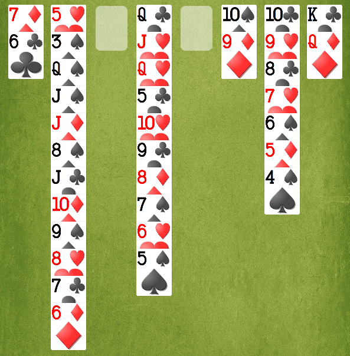
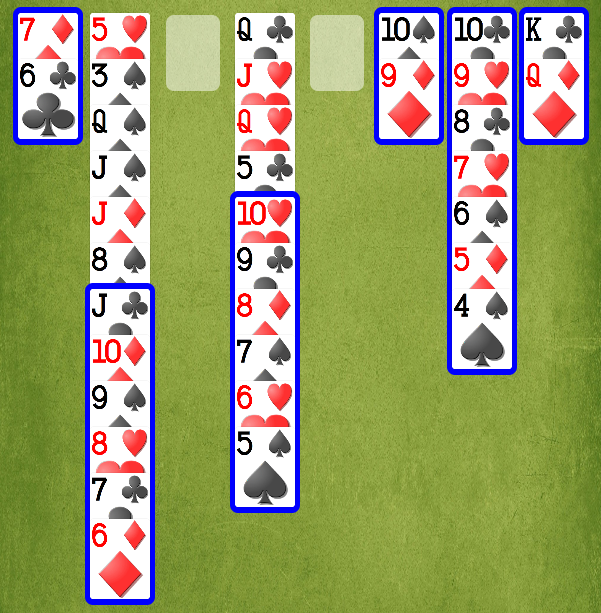

If Show Sequences is on, the last cards of every Column are outlined to show the longest sequence (cards in descending order in alternating colors). At a minimum, the last card is outlined.
With Show Sequences off:

With Show Sequences on:
